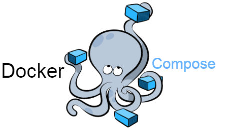

Deploy usando Docker Compose

Você pode realizar deploy do projeto usando Docker Compose. Todavia, esta não é a forma mais recomendada de realização de deploy.
Introdução
Docker Compose é uma ferramenta simples de orquestração de contêineres. Para o Minerva System, é principalmente uma forma de testar a forma como o serviço se comporta em rede.
Objetivo
O deploy usando Docker Compose é útil principalmente do ponto de vista da geração das imagens das aplicações dos microsserviços do Minerva System, mas também não é a forma mais recomendada de colocar o sistema em produção, porque não prevê fatores de escalabilidade como o deploy usando Kubernetes.
Utilize esta forma principalmente quando quiser avaliar o comportamento do sistema no que tange a interconexões entre os serviços numa rede virtual.
Dependências
Você precisará ter instalado:
- Docker versão 20.10 ou superior;
- Docker Compose versão 2.2.3 ou superior.
Além disso, todos os comandos a seguir devem ser executados no diretório raiz deste projeto.
Geração das imagens
Caso você só precise gerar as imagens Docker para o serviço, você poderá fazê-lo com o comando a seguir:
docker compose build
Se você nunca tiver realizado deploy da aplicação com Compose, isto não é necessário, uma vez que o Compose se encarregará de gerá-las no primeiro deploy.
ATENÇÃO: O PROCESSO DE GERAÇÃO DAS IMAGENS É DEMORADO.
Gerando uma imagem
Pode ocorrer de você querer gerar apenas uma imagem, por exemplo, quando você já tiver realizado deploy antes e tiver realizado uma modificação em apenas um microsservico, e precisar testá-lo.
Para isso, use o comando a seguir, substituindo <servico> pelo nome
do serviço (como listado no arquivo docker-compose.yml):
docker compose build <servico>
Caso a geração da imagem apenas reutilize o cache da mesma já existente, você poderá forçar a geração da imagem da seguinte forma:
docker compose build --no-cache <servico>
ATENÇÃO: ESTE PROCESSO PODE SER DEMORADO.
ATENÇÃO: RECOMPILAR A IMAGEM NÃO REINICIA UM SERVIÇO EM EXECUÇÃO.
Nomes e tags das imagens geradas
As imagens geradas pelos passos anteriores são geradas com nomes específicos. Esses nomes não fazem tanta diferença para o Docker Compose, mas podem ser muito úteis do ponto de vista do deploy via Kubernetes.
Os nomes das imagens geradas podem ser verificados no arquivo
docker-compose.yml. Mais especificamente, para cada serviço, existe
uma propriedade image que determina o nome da imagem gerada.
As imagens são sempre geradas com a tag latest.
A seguir, temos uma tabela relacionando os serviços com os nomes e tags das imagens geradas.
| Serviço | Nome e tag da imagem |
|---|---|
frontend | minerva_frontend:latest |
rest | minerva_rest:latest |
runonce | minerva_runonce:latest |
users | minerva_users:latest |
postgresql | postgres:14 (Não gerado) |
pgadmin | minerva_pgadmin:latest |
Executando os serviços
Para executar os serviços usando Docker Compose, use o seguinte comando:
docker compose up
Caso você queira desligar o funcionamento dos serviços da sessão atual do console, poderá executá-los em forma de daemon:
docker compose up -d
Neste caso em específico, para localhost, estarão abertas as
seguintes portas para acesso:
| Porta | Serviço |
|---|---|
80 | Front-End |
9000 | API REST |
8484 | pgAdmin4 |
Acompanhando logs
Para acompanhar os logs de um deploy via daemon ou de um outro console, você poderá realizá-lo através do comando:
docker compose logs -f
Caso seja necessário acompanhar os logs de apenas um serviço:
docker compose logs -f <servico>
Lembre-se de que o nome do serviço em questão deverá ser informado
como listado em docker-compose.yml.
Reiniciando um único serviço
Você poderá reiniciar um único serviço, caso tenha recompilado a imagem do mesmo, por exemplo.
Nesse caso, basta usar o seguinte comando:
docker compose up -d --no-deps <servico>
Caso você queira incluir o passo de recompilação da imagem:
docker compose up -d --no-deps --build <servico>
Encerrando os serviços
Para encerrar imediatamente o serviço, execute o seguinte comando:
docker compose down
Caso você queira também remover os volumes associados aos serviços (por exemplo, nocaso do PostgreSQL e do pgAdmin), use este comando em vez do anterior:
docker compose -v down